100% Google Docs Compatible with Images (Localhost-Sync)
✅ Copied Successfully! Now go to your Google Doc and Press Ctrl+V
प्रिय विद्यार्थियों, 14-15 अगस्त 1947 की मध्य रात्रि को भारत स्वतंत्र हुआ। स्वतंत्र भारत के प्रथम प्रधानमंत्री जवाहरलाल नेहरू ने संविधान सभा के विशेष सत्र को संबोधित करते हुए अपना ऐतिहासिक भाषण दिया, जिसे 'भाग्यवधू से चिर-प्रतीक्षित भेंट' (Tryst with Destiny) के नाम से जाना जाता है।
लेकिन आजादी की यह भोर खुशियों के साथ-साथ अत्यंत वेदना, सांप्रदायिक हिंसा, विस्थापन का दंश और तीन मुख्य राष्ट्रीय चुनौतियाँ लेकर आई थी।
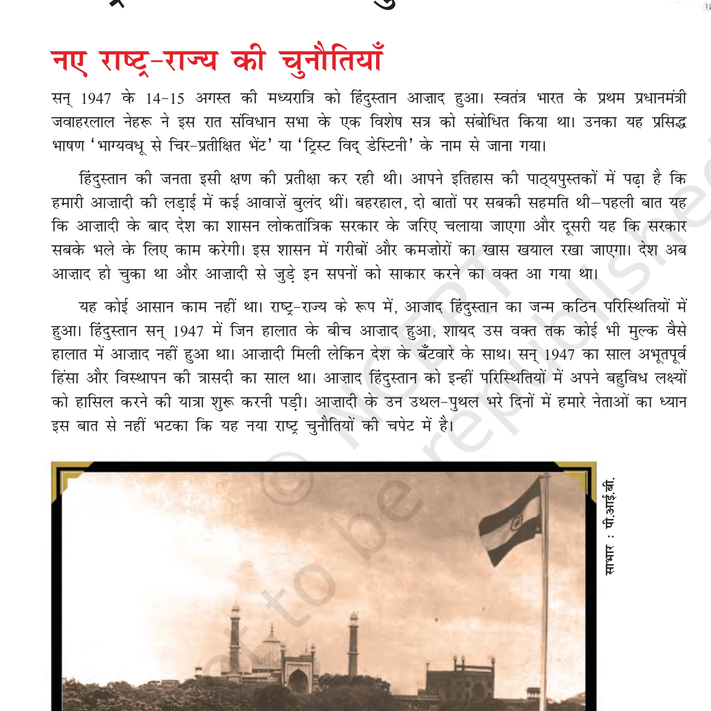
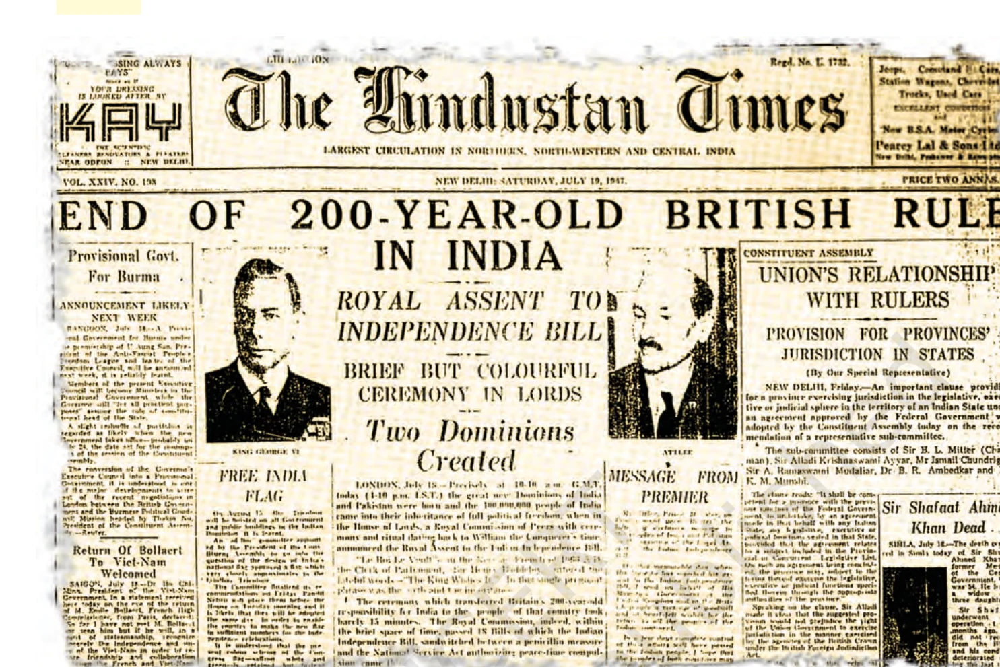
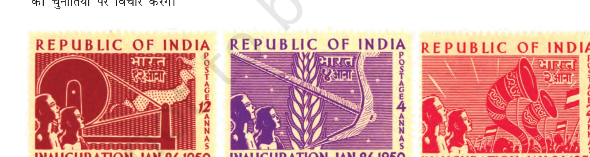
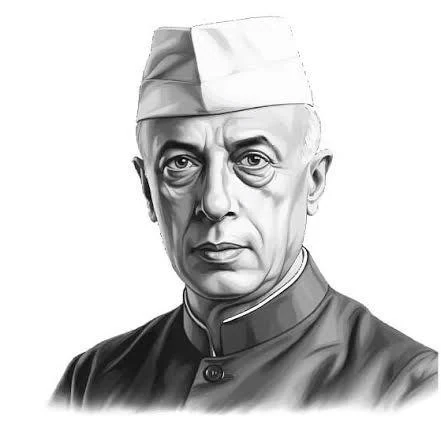
योगदान: स्वतंत्र भारत के प्रथम प्रधानमंत्री एवं आधुनिक भारत के निर्माता। 14-15 अगस्त 1947 को उनका प्रसिद्ध 'Tryst with Destiny' भाषण राष्ट्र की नई यात्रा का प्रतीक बना। उन्होंने भारत को गुटनिरपेक्षता, लोकतंत्र, नियोजित अर्थव्यवस्था तथा धर्मनिरपेक्षता के सिद्धांतों पर आगे बढ़ाया।
1947 में स्वतंत्रता की प्राप्ति के साथ ही ब्रिटिश भारत का विभाजन हुआ और दो स्वतंत्र राष्ट्र—भारत और पाकिस्तान अस्तित्व में आए। यह विभाजन केवल सीमाओं का विभाजन नहीं था, बल्कि दिलों, संपत्तियों, पुलिस, टाइपराइटरों और परिवारों का विदारक बंटवारा था।
विभाजन का सैद्धांतिक आधार मुस्लिम लीग का 'द्वि-राष्ट्र सिद्धांत' (Two-Nation Theory) था। इसके अनुसार भारत किसी एक कौम का नहीं, बल्कि 'हिंदू' और 'मुसलमान' नाम की दो कौमों का देश था। इसी आधार पर मुस्लिम लीग ने मुसलमानों के लिए एक अलग देश 'पाकिस्तान' की मांग की। कांग्रेस ने इस सिद्धांत और विभाजन का विरोध किया, परंतु तत्कालीन परिस्थितियों के कारण अंततः विभाजन को स्वीकार करना पड़ा।
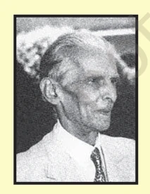
योगदान: मुस्लिम लीग के प्रमुख नेता और पाकिस्तान के निर्माता। स्वतंत्रता आंदोलन के शुरुआती वर्षों में हिंदू-मुस्लिम एकता के प्रबल समर्थक और कांग्रेस के सक्रिय सदस्य (सरोजिनी नायडू ने उन्हें 'हिंदू-मुस्लिम एकता का राजदूत' कहा था)। 1940 के लाहौर प्रस्ताव के बाद उन्होंने मुस्लिम समुदाय के लिए पृथक राष्ट्र की मांग करते हुए 'द्वि-राष्ट्र सिद्धांत' (Two-Nation Theory) का प्रतिपादन किया। विभाजन के बाद वे पाकिस्तान के प्रथम गवर्नर-जनरल बने।
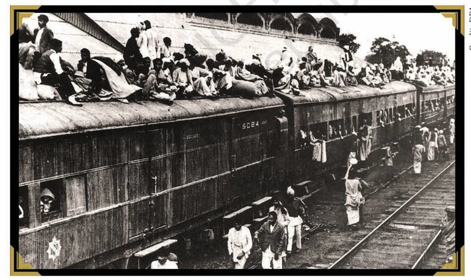
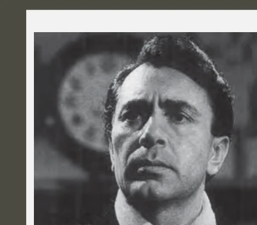
15 अगस्त 1947 को जब देश जश्न मना रहा था, तब राष्ट्रपिता महात्मा गांधी नोआखाली और कलकत्ता में सांप्रदायिक दंगे रोकने के लिए अनशन पर बैठे थे। 30 जनवरी 1948 को नाथूराम गोडसे ने उनकी हत्या कर दी। गांधीजी के बलिदान ने पूरे देश को झकझोर दिया और हिंसा पर विराम लगा दिया।
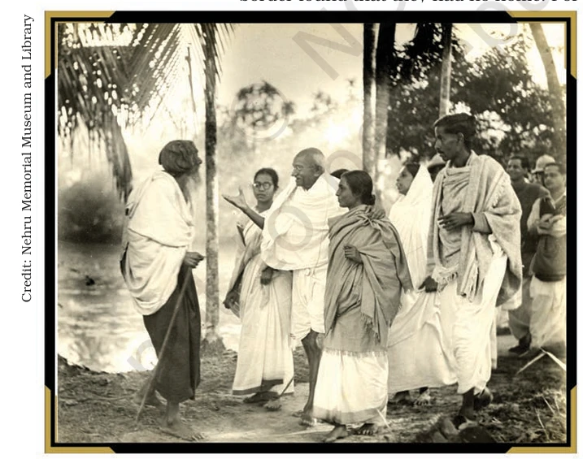
आजादी के समय भारत में कुल 565 देसी रियासतें (Princely States) थीं। अंग्रेजों ने राजाओं को यह विकल्प दिया कि वे भारत या पाकिस्तान में शामिल हों अथवा स्वतंत्र रहें। सरदार पटेल की दूरदर्शिता से 561 रियासतें आसानी से मिल गईं, परंतु चार रियासतों के विलय में भारी बाधाएँ आईं!
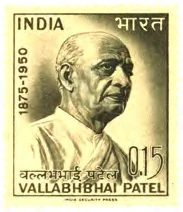
योगदान: स्वतंत्र भारत के प्रथम उप-प्रधानमंत्री और गृह मंत्री। 'भारत के लौह पुरुष' (Iron Man of India)। उन्होंने अपनी अदम्य इच्छाशक्ति और चातुर्य से 565 रियासतों का भारत में ऐतिहासिक विलय कराया और भारतीय संघ को विखंडित होने से बचाया।
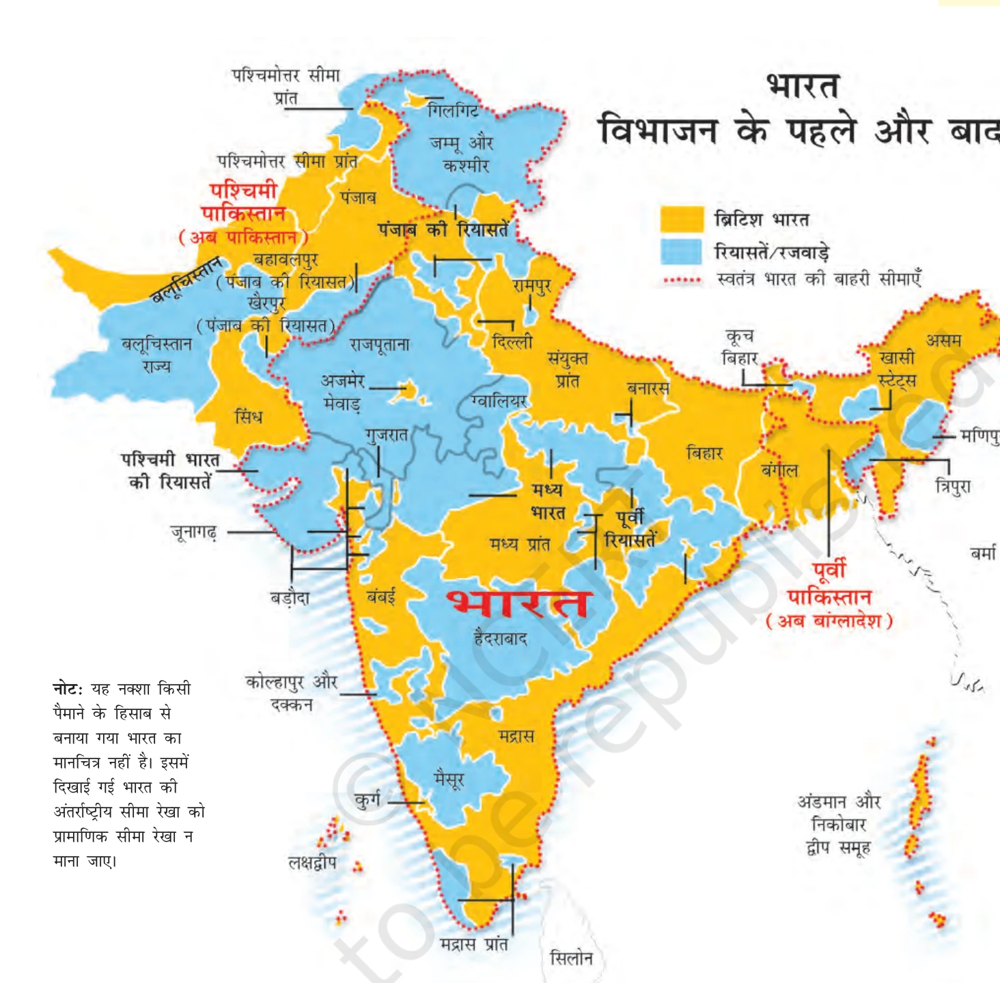
1. रियासत की पृष्ठभूमि: जूनागढ़ गुजरात के काठियावाड़ प्रायद्वीप में स्थित एक छोटी लेकिन अत्यंत महत्वपूर्ण रियासत थी। यहाँ की लगभग 82% आबादी हिंदू थी, जबकि यहाँ का शासक नवाब महाबत खानजी एक मुस्लिम था। जूनागढ़ भौगोलिक रूप से पूरी तरह भारतीय संघ के भूभाग से घिरा हुआ था।
2. नवाब का विवादास्पद फैसला: 15 अगस्त 1947 को स्वतंत्रता के दिन नवाब ने अपनी प्रजा की आकांक्षाओं के विपरीत जाकर जूनागढ़ का पाकिस्तान में विलय करने की घोषणा कर दी। पाकिस्तान सरकार ने भी 13 सितंबर 1947 को कूटनीतिक चाल चलते हुए इस विलय को स्वीकार कर लिया, जिससे भारत सरकार हैरान रह गई क्योंकि जूनागढ़ और पाकिस्तान के बीच कोई थलीय संपर्क नहीं था (केवल समुद्री मार्ग था)।
3. जन-आंदोलन और 'आरज़ी हुकूमत': नवाब के फैसले से क्षुब्ध होकर जूनागढ़ की जनता ने उग्र आंदोलन छेड़ दिया। बंबई में श्यामलदास गांधी (महात्मा गांधी के भतीजे) के नेतृत्व में एक अस्थायी सरकार 'आरज़ी हुकूमत' (Arzi Hukumat) का गठन किया गया। आरज़ी हुकूमत के स्वयंसेवकों ने जूनागढ़ के कई कस्बों और थानों पर कब्जा कर लिया और नवाब का शासन ठप कर दिया।
4. नवाब का पलायन और भारत का नियंत्रण: जनता के विद्रोह और भारत सरकार द्वारा की गई आर्थिक नाकेबंदी से डरकर नवाब महाबत खानजी अपने परिवार, खजाने और अपने चहेते दर्जनों कुत्तों के साथ विमान से कराची भाग गया। नवाब के जाने के बाद जूनागढ़ के दीवान शाहनवाज भुट्टो (जो बेनजीर भुट्टो के दादा थे) ने अराजकता से बचने के लिए भारत सरकार को प्रशासन संभालने का निमंत्रण दिया। 9 नवंबर 1947 को भारतीय सेना ने जूनागढ़ में शांति व्यवस्था स्थापित की।
5. ऐतिहासिक जनमत संग्रह (Plebiscite): सरदार पटेल की लोकतांत्रिक प्रतिबद्धता के कारण **फरवरी 1948** में जूनागढ़ में औपचारिक जनमत संग्रह कराया गया। कुल 2,01,457 पंजीकृत मतदाताओं में से केवल 91 लोगों ने पाकिस्तान के पक्ष में वोट दिया, जबकि शेष 99.9% मतदाताओं ने भारत में शामिल होने के पक्ष में वोट डाला। इस प्रकार, जूनागढ़ पूर्णतः भारतीय संघ का अंग बन गया।
1. विशालता और निजाम की हठधर्मिता: हैदराबाद भारत की सबसे बड़ी और समृद्ध देशी रियासत थी, जो आज के आंध्र प्रदेश, तेलंगाना, महाराष्ट्र और कर्नाटक के विशाल क्षेत्रों में फैली थी। यहाँ की बहुसंख्यक आबादी हिंदू थी, लेकिन शासक 'निजाम' मीर उस्मान अली स्वतंत्र राज्य की जिद पर अड़ा था। उसने नवंबर 1947 में भारत सरकार के साथ एक वर्ष के लिए 'यथास्थिति समझौता' (Standstill Agreement) किया।
2. तेलंगाना के किसानों का ऐतिहासिक विद्रोह: इसी दौरान, हैदराबाद के तेलंगाना क्षेत्र में निजाम के सामंती और शोषक शासन के खिलाफ किसानों ने बड़ा जन-आंदोलन छेड़ दिया। कम्युनिस्टों और कांग्रेस के नेतृत्व में यह आंदोलन पूरे राज्य में फैल गया। महिलाएं भी बड़ी संख्या में इसमें शामिल हुईं क्योंकि वे निजाम के अत्याचारों की मुख्य शिकार थीं।
3. 'रजाकारों' का सांप्रदायिक अत्याचार: जन-आंदोलन को कुचलने के लिए निजाम ने अपने घोर सांप्रदायिक और उग्रवादी अर्धसैनिक बल 'रजाकारों' (Razakars) को तैनात किया। रजाकारों का नेतृत्व कासिम रिजवी कर रहा था। रजाकारों ने बहुसंख्यक हिंदू आबादी पर अमानवीय जुल्म ढाए, गांवों को जलाया, सामूहिक हत्याएं कीं और लूटपाट का नग्न तांडव मचाया।
4. 'ऑपरेशन पोलो' (Operation Polo - 1948): जब कानून-व्यवस्था पूरी तरह ध्वस्त हो गई और सांप्रदायिक हिंसा पड़ोसी भारतीय राज्यों में फैलने लगी, तो गृह मंत्री सरदार पटेल ने कड़ा कदम उठाने का निर्णय लिया। **13 सितंबर 1948** को भारतीय सेना ने हैदराबाद में प्रवेश किया। इस सैन्य कार्रवाई को 'ऑपरेशन पोलो' नाम दिया गया, क्योंकि हैदराबाद में उस समय विश्व के सर्वाधिक 17 पोलो खेल मैदान (Polo Grounds) थे।
5. निजाम का आत्मसमर्पण: केवल 5 दिनों की त्वरित कार्रवाई के बाद **17 सितंबर 1948** को निजाम की सेना और रजाकारों ने आत्मसमर्पण कर दिया। निजाम ने भारत के साथ पूर्ण विलय पत्र पर हस्ताक्षर किए और रजाकार प्रमुख कासिम रिजवी को गिरफ्तार कर लिया गया। बाद में निजाम को हैदराबाद का 'राजप्रमुख' बनाया गया।
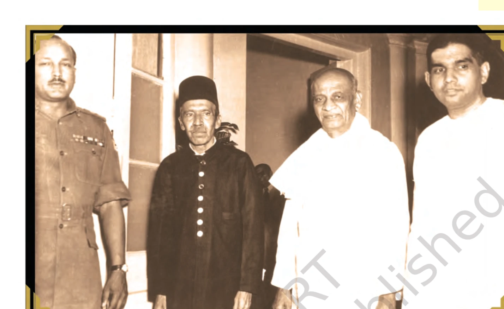
1. महाराजा का स्वतंत्र रहने का द्वंद्व: जम्मू-कश्मीर एक मुस्लिम बहुल रियासत थी, लेकिन यहाँ के शासक हिंदू राजा महाराजा हरि सिंह थे। वे भारत या पाकिस्तान किसी में शामिल नहीं होना चाहते थे और कश्मीर को एक स्वतंत्र देश (एशिया का स्विट्जरलैंड) बनाए रखने का सपना देख रहे थे।
2. पाकिस्तान का कबायली हमला: कश्मीर की इस अनिश्चित स्थिति का लाभ उठाते हुए पाकिस्तान ने **अक्टूबर 1947** में पश्तून कबायलियों और अपनी नियमित सेना के माध्यम से कश्मीर पर भीषण हमला कर दिया। हमलावरों ने सीमा पार कर मुजफ्फराबाद और बारामूला में भयंकर तबाही मचाई, लूटपाट की और श्रीनगर के बेहद नजदीक पहुंच गए।
3. विलय पत्र पर ऐतिहासिक हस्ताक्षर (26 अक्टूबर 1947): घबराकर महाराजा हरि सिंह ने भारत से तुरंत सैन्य मदद मांगी। भारत सरकार (लॉर्ड माउंटबेटन और सरदार पटेल) ने स्पष्ट किया कि अंतरराष्ट्रीय कानून के अनुसार, जब तक कश्मीर कानूनी तौर पर भारत का हिस्सा नहीं बनता, भारतीय सेना वहाँ नहीं भेजी जा सकती। अंततः **26 अक्टूबर 1947** को महाराजा हरि सिंह ने भारत के ऐतिहासिक **'विलय पत्र' (Instrument of Accession)** पर हस्ताक्षर किए।
4. शेख अब्दुल्ला की भूमिका और भारतीय सेना का पराक्रम: कश्मीर के सबसे लोकप्रिय जननेता शेख अब्दुल्ला (नेशनल कॉन्फ्रेंस) ने पाकिस्तान के द्वि-राष्ट्र सिद्धांत को खारिज कर भारत के साथ विलय का पूरा समर्थन किया। 27 अक्टूबर की सुबह से भारतीय वायुसेना के विमान सैनिकों को लेकर श्रीनगर हवाई अड्डे पर उतरे और हमलावरों को पीछे धकेलना शुरू किया। भारतीय सेना ने श्रीनगर को बचाया और हमलावरों को खदेड़ा। बाद में संयुक्त राष्ट्र (UN) के हस्तक्षेप से युद्धविराम हुआ, जिसके कारण कश्मीर का कुछ हिस्सा पाकिस्तान के अवैध कब्जे में रह गया (POK)। कश्मीरी आकांक्षाओं को देखते हुए भारतीय संविधान में **अनुच्छेद 370** के तहत कश्मीर को विशेष दर्जा दिया गया था, जो अगस्त 2019 में समाप्त किया गया।
विभाजन और विलय के बाद जम्मू-कश्मीर की राजनीति मुख्य रूप से दो प्रमुख परिवारों और उनके दलों के इर्द-गिर्द घूमती रही है:
1. आंतरिक स्वायत्तता की शर्त: मणिपुर भारत के उत्तर-पूर्वी सीमा पर स्थित एक पहाड़ी रियासत थी। यहाँ के महाराजा बोधचंद्र सिंह ने स्वतंत्रता से कुछ दिन पूर्व भारत सरकार के साथ विलय के सहमति पत्र (Instrument of Accession) पर हस्ताक्षर किए थे। इसके तहत मणिपुर की आंतरिक स्वायत्तता को बनाए रखने का आश्वासन दिया गया था और केवल रक्षा, विदेश तथा संचार मामले भारत को सौंपे गए थे।
2. भारत का पहला लोकतांत्रिक चुनाव (जून 1948): मणिपुर की जनता और राजनीतिक दलों के भारी दबाव में महाराजा ने **जून 1948** में विधानसभा के चुनाव कराए। यह चुनाव भारतीय इतिहास में **'सार्वभौमिक वयस्क मताधिकार' (Universal Adult Franchise)** के आधार पर होने वाला **पहला चुनाव** था। इस प्रकार मणिपुर संवैधानिक राजतंत्र (Constitutional Monarchy) के रूप में भारत का पहला पूर्ण लोकतांत्रिक अंग बना।
3. राजनीतिक मतभेद और विधानसभा का गतिरोध: मणिपुर की विधानसभा और राज्य मंत्रिमंडल में भारत के साथ पूर्ण विलय के मुद्दे पर गहरे मतभेद थे। मणिपुर कांग्रेस चाहती थी कि राज्य का भारत में पूर्ण विलय हो जाए, जबकि अन्य क्षेत्रीय दल और महाराजा इसके विरोधी थे और स्वायत्तता बनाए रखना चाहते थे।
4. विलय समझौते पर दबाव (सितंबर 1949): इस गतिरोध को खत्म करने के लिए भारत सरकार ने सख्त रुख अपनाया। **सितंबर 1949** में महाराजा बोधचंद्र सिंह को शिलांग (असम) बुलाया गया। वहाँ उन्हें नजरबंद जैसी स्थिति में रखा गया और मणिपुर विधानसभा की सहमति के बिना, उन पर भारी दबाव डालकर **'विलय समझौते' (Merger Agreement)** पर हस्ताक्षर करवा लिए गए। **1 अक्टूबर 1949** को मणिपुर पूर्णतः भारत का राज्य बना। इस बलपूर्वक लिए गए निर्णय से मणिपुर की जनता में गहरा असंतोष और क्षोभ पैदा हुआ, जिसने आने वाले दशकों में वहाँ अलगाववादी और उग्रवादी आंदोलनों की आधारशिला रखी।
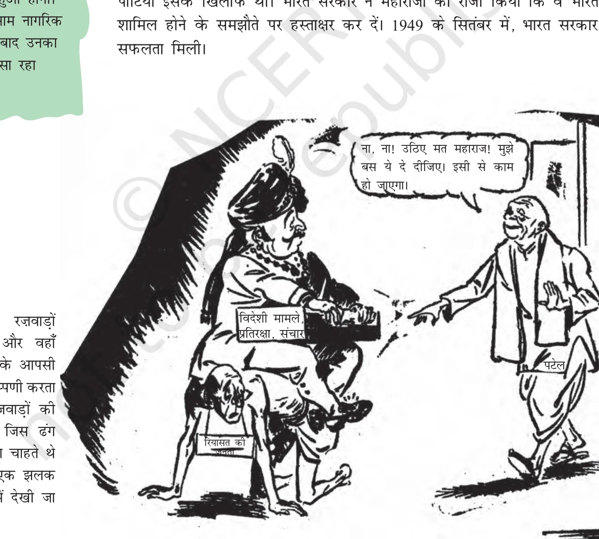
आजादी के बाद राज्यों की आंतरिक सीमाओं का निर्धारण भाषाई और सांस्कृतिक आधार पर करने की तीव्र मांग उठी।
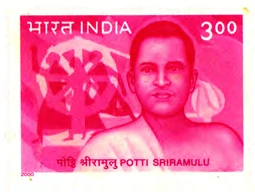
योगदान: प्रसिद्ध गांधीवादी स्वतंत्रता सेनानी। उन्होंने पृथक तेलगु भाषी राज्य 'आंध्र प्रदेश' की मांग के लिए 56 दिनों का ऐतिहासिक आमरण अनशन किया और अपने प्राण न्योछावर कर दिए। उनके बलिदान के बाद 1953 में भाषाई आधार पर पहला राज्य आंध्र प्रदेश बना।
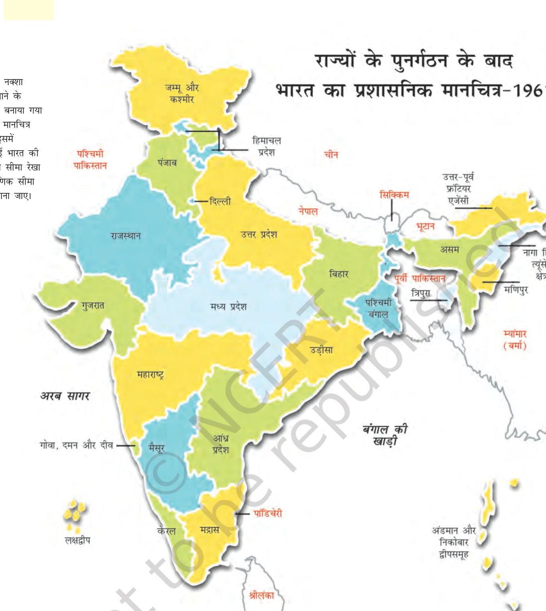
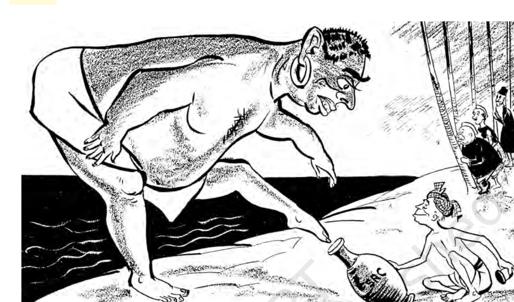
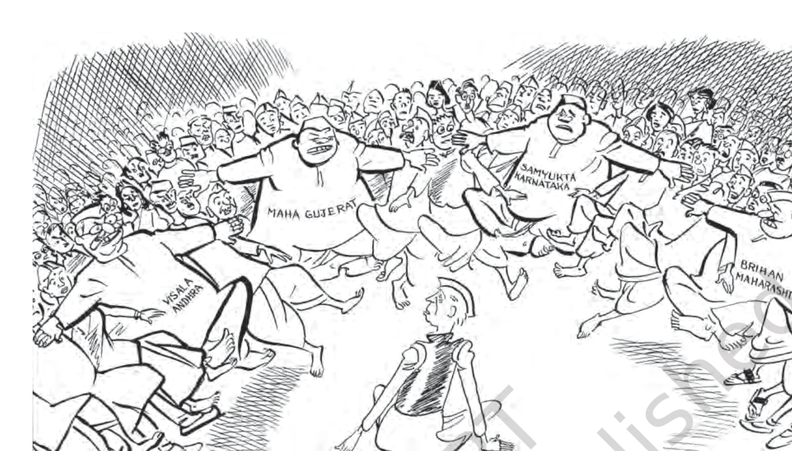
1953 में केंद्र सरकार ने न्यायमूर्ति फजल अली की अध्यक्षता में 'राज्य पुनर्गठन आयोग' (States Reorganization Commission) बनाया। इसकी सिफारिशों के आधार पर 1956 में राज्य पुनर्गठन अधिनियम पारित हुआ, जिसके तहत 14 राज्य और 6 केंद्र शासित प्रदेश बनाए गए।
प्रश्न: स्वतंत्र भारत के सामने रजवाड़ों के विलय की क्या समस्या थी? सरदार पटेल की भूमिका एवं चार प्रमुख विवादित रियासतों का वर्णन कीजिए।
उत्तर: आजादी के समय 565 देसी रियासतों का भारत में विलय कराना अति कठिन था। अंग्रेजों ने राजाओं को स्वतंत्र रहने का विकल्प दिया था, जिससे भारत के कई टुकड़े होने का खतरा था।
सरदार पटेल की भूमिका: गृह मंत्री सरदार पटेल ने अपनी कूटनीतिक क्षमता, 'इंस्ट्रूमेंट ऑफ एक्सेशन' तथा प्रिवी पर्स के प्रलोभन से 561 रियासतों का शांतिपूर्ण विलय कराया।
चार विवादित रियासतें:
1. जूनागढ़: फरवरी 1948 में जनमत संग्रह (Plebiscite) कराकर विलय।
2. हैदराबाद: सितंबर 1948 में सैन्य कार्रवाई 'ऑपरेशन पोलो' चलाकर रजाकारों का दमन और विलय।
3. जम्मू और कश्मीर: 26 अक्टूबर 1947 को महाराजा हरि सिंह द्वारा विलय पत्र (Instrument of Accession) पर हस्ताक्षर।
4. मणिपुर: 1948 में वयस्क मताधिकार पर चुनाव तथा सितंबर 1949 में विलय समझौता।